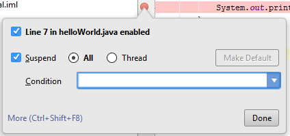
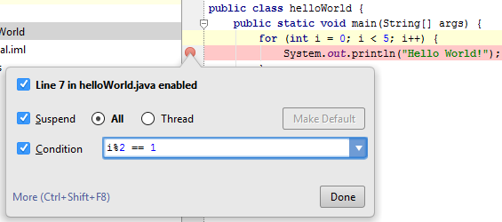
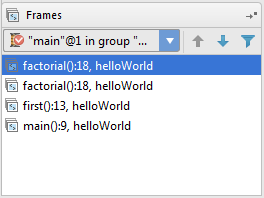
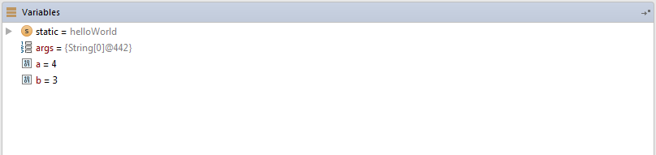
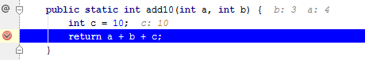

Debugging with IntelliJ
Breakpoints
Breakpoints are used in order to stall a running program at selected areas within the code. Once the code is stopped, users can examine how the code is running based on current values of variables and where we are in the stack.
Creating Breakpoints
In order to set a breakpoint, click on the light gray column to the left of the line in the code where a breakpoint is desired. After this has been done the line should be highlighted in red and marked with a red circle as shown below:


Using Breakpoints
Breakpoints can be set on any line of code, this includes method names. Breakpoints on method names will temporarily stop the program from running any time that method is called. These breakpoint's appearances differ from the breakpoint on an executable line of code, which would lack the 4 black dots.
Properties of Breakpoints
If you right click the breakpoint marker you can access the breakpoint properties.
The condition text field allows for the breakpoint to only be activated given a specific condition. For instance, suppose we wanted to have a breakpoint activated within a for loop on every odd iteration. This could be implemented by entering the following as the condition.
Each time the value of i modulo 2 is equal to 1 the breakpoint is activated. Therefore the program will halt when i is 1 or 3.
Any variables used within the condition should be within the scope of the method that contains the breakpoint, otherwise an error will pop up which will allow you to either halt or skip the said breakpoint.
Debugging with Breakpoints
Once we have the desired breakpoints selected, we will go to the toolbar and under Run we will be given two options, Run and Debug. Selecting the Debug option will make it so IntelliJ will run our program and halt at breakpoints. Upon reaching a breakpoint, IntelliJ will show us two subwindows, Variables and Frames.
Frames
Frames gives us a glimpse of the stack frame. In layman's terms, the stack frame shows the currently running methods. If we are in some method A( ) then this method will be on the top of the stack. Once A( ) calls another method, say B( ), then B( ) is pushed on top of the stack. When B( ) is complete, it is popped off the stack and and then A( ) will continue running.
In order to show the behavior of the stack frame, the below example shows the stackframe towards the end of a program that calls a method first( ) which will then call a recursive method factorial(3).
The stack frame shows us three things within each line, the method name, which line the method occurs at, and which class the method is from (e.g. factorial(), 18, class respectively).
Variables
Variables shows us the values of the variables within that method. For instance, if we had a program that adds 2 integers (a and b) together and had a breakpoint at the function that sums the two integers the variables window would resemble the image below.
Once a breakpoint has been reached, light gray text will show up next to the code that shows the values for each variable as well as the input arguments for the function, for instance. If we have a function add10(a, b) and had the return function marked as a breakpoint the gray text will appear as below for a=4 and b=3.
There are many other ways to IntelliJ has made debugging easier, for more information on debugging with IntelliJ check out https://www.jetbrains.com/idea/help/debugging.html.